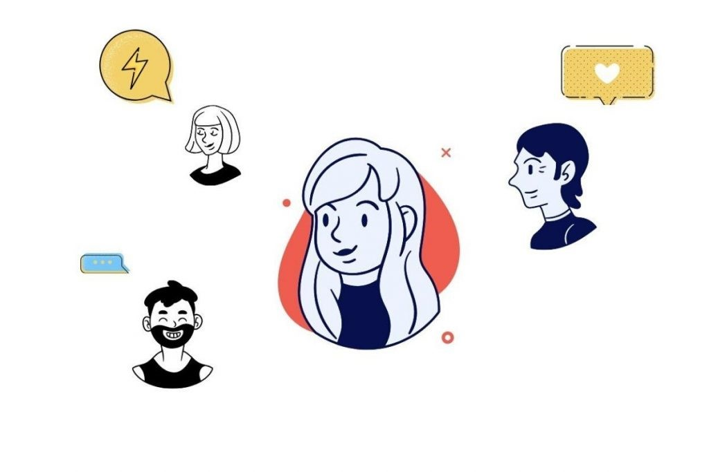
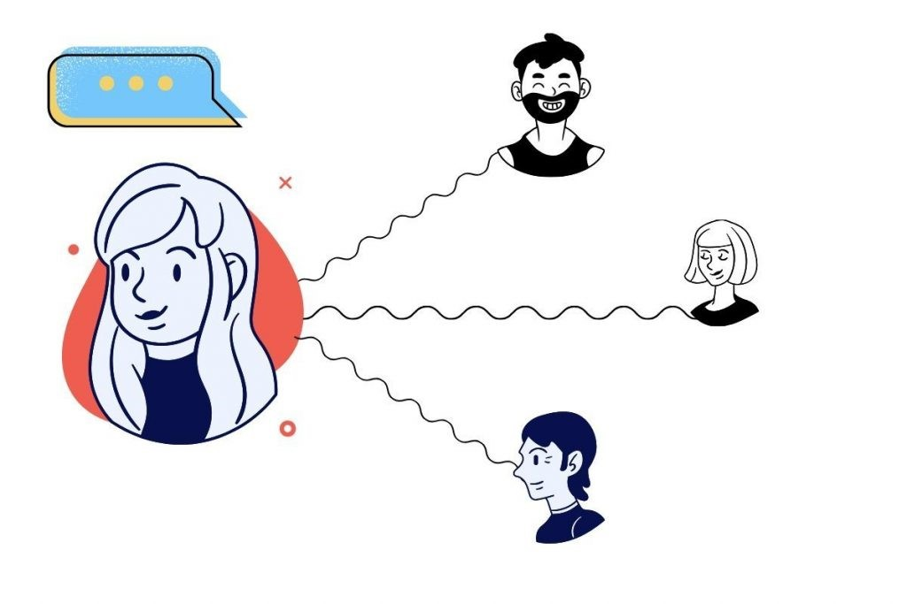
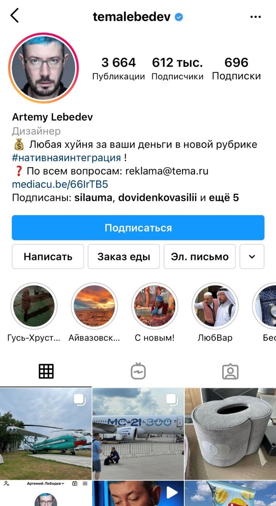
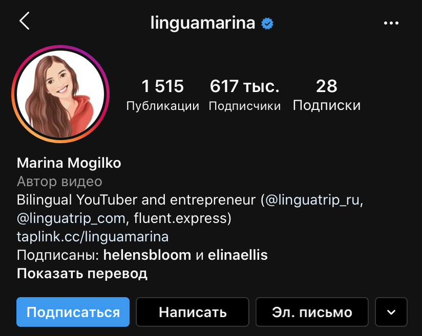
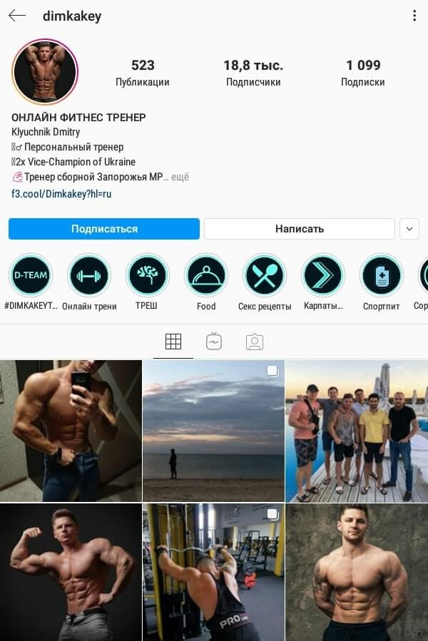
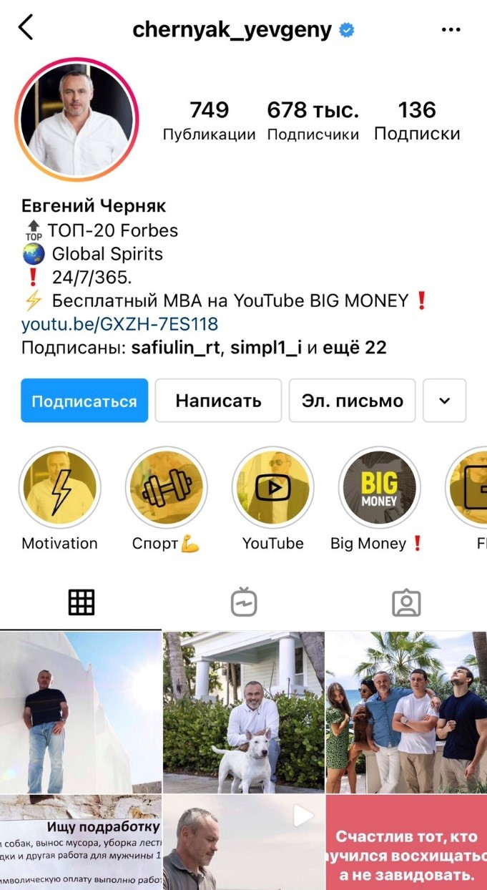
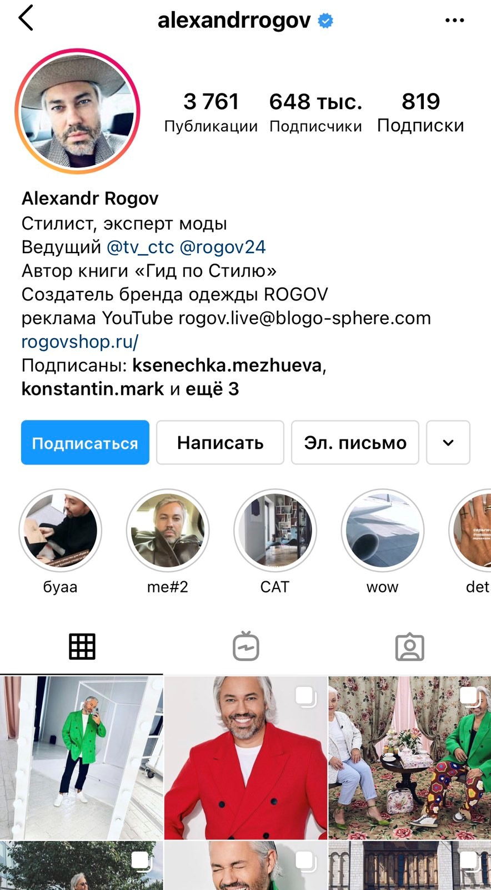
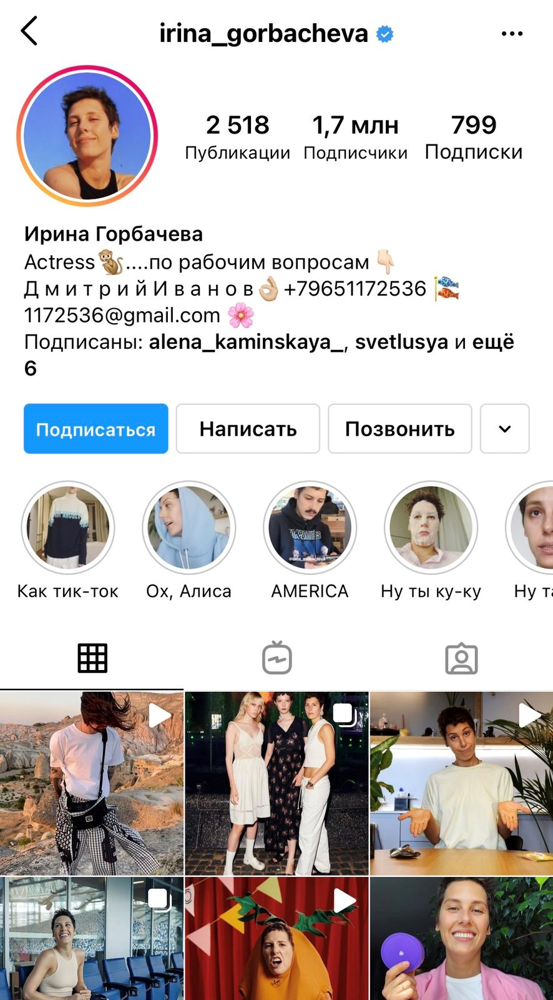
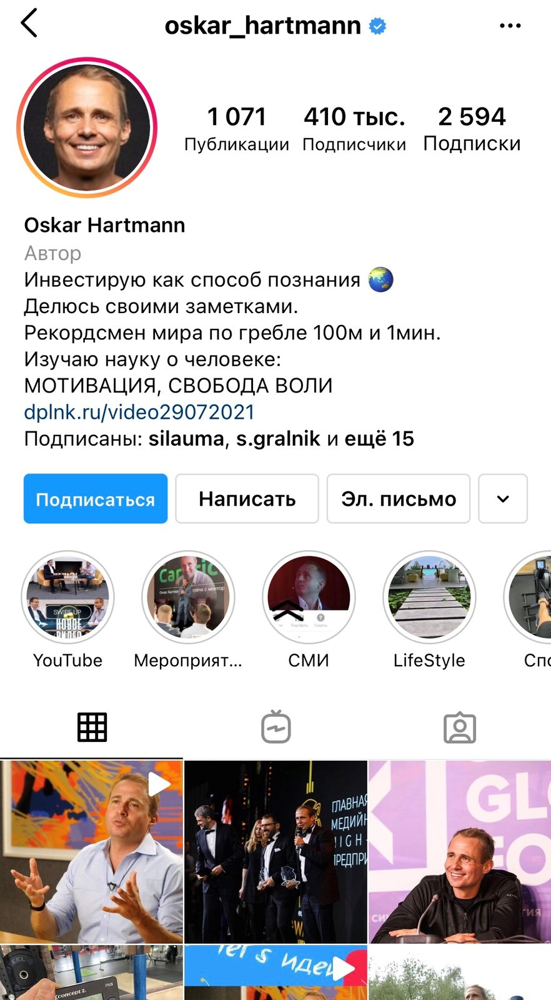
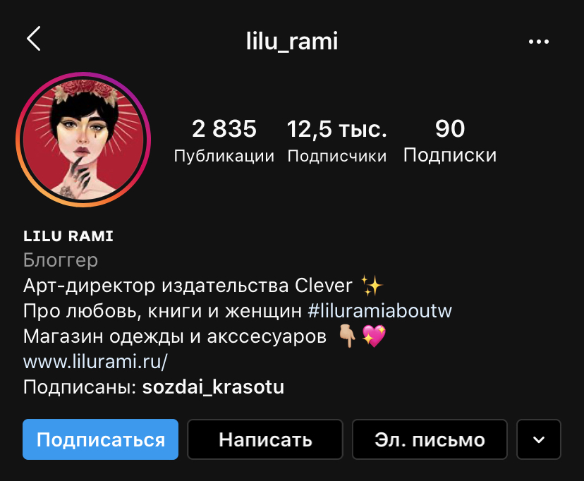

Сильный личный бренд — залог успеха в социальных сетях. Хотите продавать свои услуги больше и дороже? Мечтаете о крупных рекламных контрактах и популярности, но не знаете, с чего начать? Мы расскажем, как эффективно продвигать личный бренд в Инстаграм, а также составим чек-лист наиболее распространенных ошибок всех новичков.
Урок 5.1
Сильный личный бренд
Что такое личный бренд и зачем его продвигать
Окей, для начала стоит разобраться с термином. Личный бренд — это информационное поле, которое формируется на протяжении всей жизни человека. Это его внешность, характер, привычки, эмоции, репутация, манера речи и основополагающие ценности. Одним словом, в понятие “личный бренд” входит совокупность ассоциаций, которые вы вызываете у людей.
Личный бренд — это лучший друг и…злейший враг. Например, если при виде вас окружающие первым делом вспоминают слово “безответственность”, то это нельзя назвать хорошим знаком.
Личный бренд есть у человека с рождения, но сильным персоналити может похвастаться далеко не каждый. Что это значит?
Сильный личный бренд — умение влиять на людей, вызывая у них беспрекословное доверие. Человек с сильным личным брендом может задавать тренды, менять мировоззрение окружающих, продавать свои услуги и побуждать людей совершать определенные действия.
Возможности, которые открывает перед вами сильный личный бренд:
- увеличение продаж;
- формирование лояльности подписчиков;
- продвижение по карьерной лестнице;>
- создание привлекательной репутации;
- выделение особенностей, которые выгодно отличают вас на фоне конкурентов;
- влияние на общественное мнение.
Личный бренд можно назвать нематериальным активом, который содействует выгодной продаже активов материальных. Его продвижение — стоящая инвестиция, а курс монетизации не подвержен экономическим спадам.
Инфлюенсеры — яркий пример сильного личного бренда. Они способны внушить фолловерам необходимость купить шампунь с экстрактом женьшеня или срочно заказать мыло по акции.
Хотите пожинать лавры успеха и пользоваться авторитетом среди подписчиков? Тогда читайте об этапах, которые приблизят вас к мечте.
От чего зависит успех личного бренда?
Успех личного бренда напрямую зависит от харизмы человека, репутации, уникальности и умения преподнести себя. Вы должны вдохновлять людей и подталкивать к совершению определенных действий. Даже если продукт далек от идеала, но человек, который его продвигает, вызывает у пользователей положительные ассоциации, товар или услугу все равно купят.
Прекрасный пример — Артемий Лебедев. Разве стоили бы его работы столько денег, будь он посредственностью с примитивным взглядом на мир? Риторический вопрос.
Продвижение личного бренда за 5 шагов
Для начала нужно поработать над базовыми составляющими продвижения:
- определите концепцию;
- позаботьтесь об аватаре (лучше использовать портретное фото на однотонном фоне);
- придумайте уникальное название аккаунта;
- расскажите подписчикам о себе;
- перейдите с обычного на бизнес-аккаунт или аккаунт автора, чтобы отслеживать статистику;
- настройте кнопки в профиле.
Каждый из нас способен создать сильный личный бренд. Для этого необходимо придерживаться следующих шагов.
Позиционирование
Просто и понятно расскажите подписчикам о том, чем вы занимаетесь. Шапка профиля — ваша визитная карточка, на которую люди обращают внимание в первую очередь, поэтому потрудитесь над емкой и лаконичной самопрезентацией. Идеально, если у вас есть свое УТП. Задайте себе вопрос «Почему на меня должны подписаться?». Раскройте свои сильные стороны и поведайте фолловерам о достижениях.
Чтобы вставить активную ссылку, например, на ваш интернет-магазин или Ютуб-канал, используйте призыв к действию в третьей строке.
Определение целевой аудитории и постановка конкретных целей
Вы же помните, что главное не количество, а качество подписчиков? На начальных этапах правильно идентифицируйте ЦА и сформулируйте цели, которые вы преследуете, ведя страницу в Инстаграм. Повысить продажи или, может, раскрутить собственный бренд одежды?
Пример: вы — профессиональный психолог и эксперт в сфере личностного роста. Ваша основная ЦА — мужчины и женщины (25-40 лет). Вы планируете в месяц получать доход в размере 100 000 рублей (консультации) и 150 000 рублей за счет продажи собственных книг. Стоимость консультации — 5 тысяч рублей (значит, вам необходимо принимать в среднем 20 клиентов). Книга стоит 500 рублей (в месяц нужно 300 продаж).
Внимание, вопрос: сколько активных подписчиков смогут приносить такую сумму?
У вас не должно быть огромного количества фолловеров, ведь это вовсе не показатель успеха. Даже 7 тысяч подписчиков, которые искренне заинтересованы в продукте, помогут вам добиться поставленных целей.
Анализ соответствия внешнего образа
Если вы определились с идеями, которые планируете транслировать в массы, проверьте, насколько соответствует им ваш нынешний внешний облик. Оцените собственные представления о своей личности (характер, манера речи, профессиональная компетенция, внешность, репутация), а затем сравните наблюдения с мнением друзей, знакомых и коллег.
Например, если вы профессиональный спортсмен, то ваша фигура должна вдохновлять фолловеров. В данном примере отличная спортивная форма еще выступает доказательством того, что продукты, которые вы продвигаете, являются рабочими (social proof).
Экспертность
Чтобы определиться с направлением блога, необходимо разобраться со сферой, в которой вы являетесь экспертом и можете быть полезны. Главная цель инфлюенсера — просто и понятно донести сложные темы. Например, вы — репетитор итальянского. Расскажите неизвестные факты об Италии, забавные истории из практики или делайте подборки, помогающий юзерам в легкой форме освоить язык.
Полезный контент
Красивые фотографии, единый стиль и регулярные посты — это, конечно, хорошо, но все же не забывайте о том, что ваш блог должен быть в первую очередь полезным. Дабы постоянно подогревать интерес подписчиков, делитесь с ними лайфхаками, советами, кейсами и нужными ссылками. Показать подписчику решение его проблемы — идеальный инструмент для повышения лояльности.
Примеры личного бренда в Инстаграм
Вот несколько крутых профилей с мощным личным брендом, которые подарят вам порцию вдохновения и уверенности в собственных силах:
-
@jackharding — британский фотограф с отличным визуальным контентом.
-
@chernyak_yevgeny — бизнесмен, глава наблюдательного совета крупного алкогольного холдинга Global Spirits, ведущий YouTube-канала о бизнесе «Big Money».
 -
@alexandrrogov — стилист, эксперт моды, телеведущий и автор книги «Гид по Стилю».
 -
@irina_gorbacheva — актриса, вайнер, инфлюенсер и прекрасная женщина с уникальным чувством юмора и здоровой самоиронией.
 -
@oskar_hartmann — российский предприниматель, инвестор, мотиватор и генеральный директор компании KupiVIP.ru.

Советы и нюансы
Определились с концепцией, установили красивую аватарку и придумали интересное описание? Отлично, вы на верном пути. Осталось только ознакомиться с полезными советами, которые помогут набрать первых подписчиков, повысить вовлеченность и избежать “подводных камней”:
-
Не забывайте активничать.
Ставьте лайки популярным блогерам и пишите развернутые комментарии. Поверьте, подобная активность принесет свои плоды и в скором времени вас заметят.
-
Сделайте ставку на экспертный контент.
Устраивайте вебинары, мастер-классы и отвечайте на вопросы подписчиков в прямых эфирах. Вам есть что сказать? Так не держите это в себе. Заливайте интересные ролики в IGTV и делитесь советами с помощью Сторис. Например, если вы стоматолог, расскажите фолловерам о том, как бороться с кариесом и сколько раз в день необходимо чистить зубы.
-
Точно определите целевую аудиторию.
Дабы не распыляться на всех и сразу, стоит создать портрет идеального подписчика, на которого и будет направлен весь пыл. Основные критерии: пол, возраст, род деятельности, материальное состояние и т.д.
-
Регулярный постинг.
Нет, мы сейчас не призываем вас публиковать все подряд. Одного поста раз в два дня будет вполне достаточно. Главное правило — качественно и осознанно.
-
Сотрудничайте с инфлюенсерами и брендами.
Ищите блогеров в вашей или смежной тематике, которые тоже заинтересованы в продвижении личного бренда. Пишите им и предлагайте сотрудничество на взаимовыгодных условиях.
-
Проводите прямые эфиры
Это классный способ привлечь внимание фолловеров. Рассказывайте о лайфхаках, делитесь советами и смешными историями, отвечайте на вопросы. Одним словом, повышайте интерес к своему контенту.
-
Найдите собственные фишки.
Быть как все — это путь в никуда. Выделяйтесь из общей массы блогеров, придумывайте конкурсы, уникальные розыгрыши или необычные словечки, которые будут использовать только ваши преданные подписчики.
-
Заполните информацию о себе.
Казалось бы, пустяковый совет, но многие забивают на этот пункт. Придумайте “вкусное” описание профиля. Кратко расскажите подписчикам о том, чем вы занимаетесь. Также не забудьте оставить контактные данные.
-
Уделите внимание качеству контента.
Люди любят глазами. Лонгриды и уйма Сторис — это, безусловно, плюс, но не забывайте о привлекательном визуале.
-
Создайте свой хэштег.
Помечайте посты особым хэштегом, чтобы создать удобную навигацию для подписчиков.
 -
Покупайте рекламу.
Да, на первых этапах продвижения придется немного раскошелиться. Совет в совете: при покупке рекламного размещения смотрите не на количество подписчиков, а на степень вовлеченности ЦА.
-
Периодически разгребайте Директ и комментарии.
Коммуникация с подписчиками — основополагающий элемент продвижения. Старайтесь развивать дискуссию, избегайте односложных ответов и не будьте высокомерны. Не забывайте благодарить фолловеров и не игнорируйте сообщения, адресованные вам.
-
Пишите живые тексты.
Написать увлекательный текст, который будет держать внимание читателя до последнего, — задача не из легких. Рекомендуем прочесть книгу “Пиши, сокращай”, которая поможет вам овладеть искусством слова. В конце поста обязательно задавайте вопросы и провоцируйте на дискуссию.
-
Не злоупотребляйте ботами.
Главное — это не количество, а качество аудитории. Вы ведь не хотите оказаться в “теневом бане” из-за своей любви к накруткам?
-
Отмечайте места.
На каждой публикации ставьте метки геолокации. Это поможет собрать небольшое количество подписчиков.
Теперь поговорим о грустном. Да-да, об ошибках, которые зачастую совершают новички:
- Ждать быстрых результатов. Популярность и многомиллионные рекламные контракты не свалятся на вас с неба. Построение сильного личного бренда — это достаточно трудоемкий процесс, поэтому научитесь ждать.
- Бросать на половине пути. Написание текстов, поиск актуальных тем и налаживание связей с целевой аудиторией — да, это утомляет, но не стоит опускать руки после первой же неудачи.
- Пытаться понравиться всем. Для того, чтобы завоевать внимание аудитории, не нужно постоянно идти у нее на поводу. Желание сохранить овец целыми и волков сытыми приводит к тому, что личный бренд получается вялым, блеклым и неинтересным.
- Излишняя скромность. Конечно, мы не призываем без устали петь дифирамбы своей персоне, но и преуменьшать значимость достоинств все-таки тоже не стоит. Помните, что возраст не имеет никакого значения, если речь идет об опыте. Можно и в 50 лет быть беспробудной бестолочью, а в 20 — признанным экспертом.
- Боязнь критики. Критика — двигатель прогресса, поэтому не прячьте голову в песок и прислушивайтесь к конструктивным замечаниям. Это поможет вам стать лучше и исправить ошибки.
Заключение
Создание личного бренда — весьма трудоемкий, но очень интересный процесс. Это ваша инвестиция в будущее, позволяющая зарабатывать на хорошей репутации и популярности. Сильный личный бренд помогает не только привлечь рекламодателей, повысить продажи или заслужить любовь аудитории, но и устроиться на высокооплачиваемую работу. Советую не терять время и начать развивать личный бренд уже сейчас!